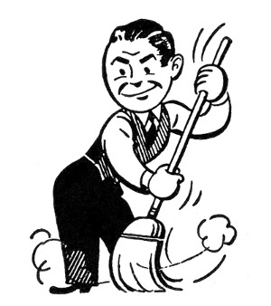

Keep your repos tidy.
Version: 66149d0

Today I learned that git will emit a list of files matching your .gitignore file if you execute,
Would remove git.htmlTo remove those files, execute,
Removing git.htmlI’m almost always using git, so this saves me from writing a .PHONY: clean Makefile rule.